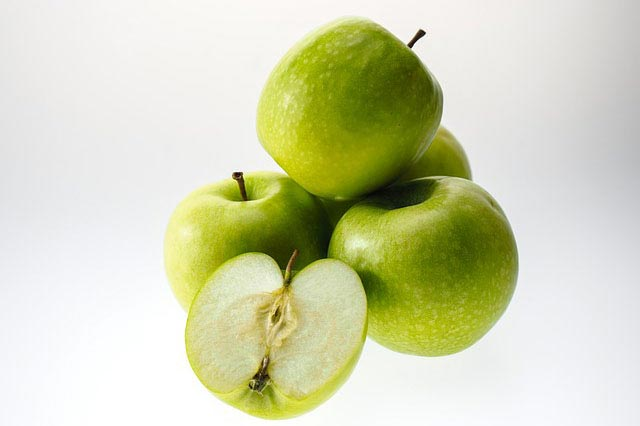
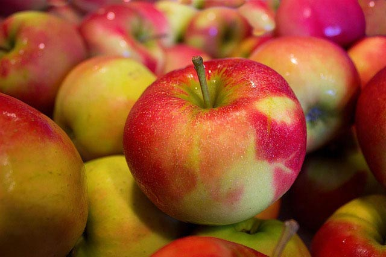
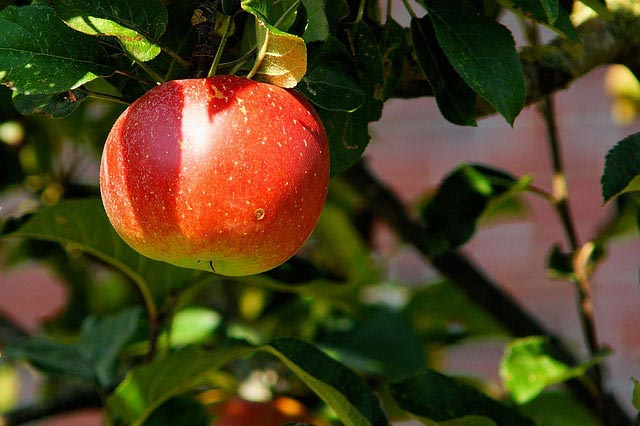
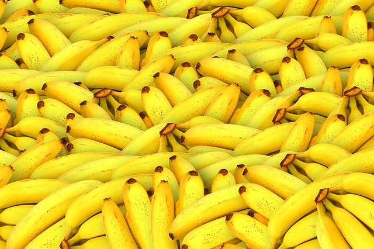

Blog
博客列表

有机水果到底是什么？有什么好处？
随着人们生活水平的不断提高，现在有好多人提倡吃有机水果。常吃有机水果不仅可以避免农药残留带给我们身体的危害，
还能更好的补充我们人体生长发育所需的各种矿物质和维生素。现在就跟大家介绍一下。
什么是有机水果？有机水果生产中完全不用人工合成的肥料、农药、化学添加剂和转基因技术。它在可能的范围内， 尽量依靠轮作、作物秸杆、家畜粪尿、绿肥、外来的有机废弃物、机械中耕、含有无机养分的矿石及生物防治等方法，保持土壤的肥力和易耕性，供给作物养分，防治病虫杂草危害。
有机水果的好处有哪些？
1、更环保，有机农业对于自然环境的保护和改善以及对于生物多样性的恢复和保护。
2、更健康，替代各种色素，防腐剂，着色剂等为原料或者辅料的食品以纯正自然的食品，岂不是更健康。
3、更营养，有机食品的营养远远高于常规食品的一个重要原因是：常规农业改变了作物的正常生长周期，促使其更快生长，所以其对于养分的积累就相对来说少了很多。
4、更安全，安全来自于两个方面，现代人的安全和后代人的安全，农药激素抗生素在危害当代人的健康，而转基因却在潜在为后代埋下祸根。
5、更美味，以激素促熟的果品，用人工加工的，工厂式农行生产出来的食品，已经除了有填饱肚子的可能之外，在没有其他的用途,更何况这种填饱更多的时候是表面上的填饱。

有机水果如何辨别真伪？
我国的有机水果产品需求市场将是巨大的，一方面随着人民收入水平的迅速提高，
使人民有能力支付较高价格的有机水果消费，另一方面，
由于大量使用农药、化肥而导致的高残留，严重影响人民的身体健康，
也使真正健康的有机水果有着广泛的国际国内市场需求。
那么有机水果如何辨别真伪呢？1、看产品包装。产品最小销售包装上应有中国有机产品认证标志、认证机构名称或标识，二者缺一不可，消费者在购买时一定要检查相关标签。
2、看有机产品认证证书。证书上会注明获证的产品种类和有效期等信息，证书的认证有效期一般为一年，一定要看清有效期，证书和有效期很有可能伪造。
3、看登录国家认监委“中国食品农产品认证信息系统”查询有机码的真伪。2012年7月1日后生产的产品，产品最小销售包装上应有17位有机码，其中认证机构代码3位、认证标志发放年份代码2位、认证标志发放随机码12位，17位数字前加“有机码”三个字。
4、看有机产品销售证。在我国境内销售的有机产品，均须经国家认监委批准的认证机构对其生产和加工过程进行认证。
对于有机果品生产这样的劳动密集型产业，我国充足的农业劳动力资源是一个巨大的优势。在这一产业就如同在服装、玩具制造产业一样，美国、欧盟发达国家反而竞争不过中国。这也是尽管有机水果的生产虽起源于发达国家，但经过了这么多年的发展，其在整个水果生产中所占比重仍然不高的原因。第三，我国地域辽阔，有各种地理、气候条件可供选择。适合建立有机果园的理想地点为数众多。

美白抗衰老的有机水果有哪些？
美的小姐姐，这篇文章要认真阅读了，
事关你美丽容颜的事情。今天京楚优鲜小编就爱美的小姐姐分享可以美白抗衰老的有机水果，
堪称“高级美容护肤水果”。
错过这些美白抗衰老的水果，会是小姐姐的损失。
石榴： 血量足，那么才可以美白和抗衰老。说到可以美白抗衰老的水果，就不得不说石榴，石榴一粒粒红色晶莹剔透的果实，可是女人最大的年轻秘器。每天一个石榴，可以让肌肤还原到20岁，将你皱纹全都抹平，肌肤更是，白里透红，美白抗衰老功效十分强大。
草莓： 草莓中富含各种果酸和维他命C，更是富含各种微元素，正是这些成分，可以补水保湿，恢复肌肤弹性，美白润肤，从而达到美白抗衰的效果。相信许多小姐姐们，都是喜欢吃草莓的，酸酸甜甜的尽是开胃。唯一一个坏处就是，草莓不是一年四季都有的水果。
菠萝： 这个美白抗衰老的菠萝是地菠萝，而不是木菠萝哦。地菠萝属于热带水果，含有丰富的维生素C，可以让肌肤里的黑色素沉淀，和淡化黑色素的效果，还能让肌肤润滑肌肤，促进新陈代谢，有效去除角质，从而达到美白的效果。
橙子： 橙子是小编非常喜欢吃的水果，酸酸甜甜的，不过小编喜欢吃酸的，那股酸爽劲，可相当刺激。而且橙子还是可以美白抗衰老的水果，橙子中含有大量的维生素C，可以有效的净化肌肤，抚平皱纹，从而让肌肤起到美白抗衰老的效果。
橘子： 橘子非常平民的价格，一点都不贵。但是小编不是说便宜就不好，恰恰相反，橘子对女人来说，起到相当大的美容作用的。橘子中含有大量的维他命和丰富的果酸，这些成分刚才小编已经介绍过是起到美白抗衰老的作用的。其实橘子皮也是宝，用橘子皮泡水喝，可以淡化黄褐斑和雀斑，甚至起到治疗的效果。
柠檬: 柠檬是各大美妆博主推荐的美白抗衰老水果，柠檬中含维生素C和钙质，这些成分对美容护肤起到很大的作用。柠檬还具有减肥效果呢，每天一杯柠檬水，既能减肥，有起到美白抗衰老的效果，而乐而不为呢，小姐姐誓要美丽到底哦。
猕猴桃: 猕猴桃又称为奇异果，猕猴桃中含有大量的维生素C和维生素E，对抗氧化和净化肌肤是起到很大的帮助的。猕猴桃不仅起到美容护肤的效果，还可以呵护头发，具有养发的作用。据说怀孕每天一个猕猴桃，宝宝以后皮肤也会超级好的哦。
苹果: 苹果可以用作美容养颜，也可以用作纤体减肥。苹果还有大量的水分，富含维生C，可以滋润肌肤，改善肌肤的爆裂症状。苹果可以淡化肌肤黑色素，有效去除面部斑点，同时起到美白和抗衰老的作用。吃苹果不用分人群，男女老少皆宜。

为何大家都爱推崇有机水果？你知道吗？
有机水果是目前水果种植的最高标准，保留了水果原有的营养，口感更为纯正，
富含水分，并且本身带有一种果疏的香甜，在生产过程中完全不使用农药、化肥、
生长调节剂等化学物质，不使用基因工程技术，
同时还必须严格按照有机食品的生产要求进行质量控制和审查，
不会对人体中造成任何危害。极大地丰富和满足了人们对安全食品的需要
，越来越受到广大消费者的喜爱，
吃有机食品已经成为一种新的时尚和健康的生活方式。
普通水果在种植的过程中会使用农药，化肥、激素、转基因这些来帮助农作物生长。
资料显示，我国农药年用量为80万至100万吨，其中使用在农作物、果树、花卉等方面的化学农药约占95%以上。
因此，几乎不存在哪个人群在某种程度上未受到农药的污染影响。人们进食残留有农药的食物，如果污染较轻、吃入的数量较小时，一般不会出现明显的症状，
但往往有头痛、头昏、无力、恶心、精神差等表现。当农药污染较重、
进入体内的农药量较多时会出现明显的不适，如乏力、呕吐、腹泻、肌颤、心慌等情况。
而有机水果在种植、生产、包装、运输以至存储的过程中，不使用任何化学肥料、
农药、防腐剂、人造色素等添加剂、提倡保持产品的天然成分，安全、生态、口感佳、
味美，微量金属含量低。而且有机水果吃起来清脆，有嚼劲，它给你感觉就是质密、
新鲜，即使是烹调后，也可保持食物的原来味道及原有的营养成分，这就让我联想到了
京楚优鲜商城卖的有机水果和有机蔬菜，由于让农作物自然成长，不添加奇奇怪怪的东西，所有的水果味道十分香甜，还带有一种新鲜、清淡的口感。真正还原了食物本真的味道，并没有因为添加化肥农药所产生的苦味、化学味、涩味、淡味与怪味。
并且还能改善体质，给身体来个大扫除。有机水果中抗氧化剂的含量比常规产品
高出200%，而科学家称抗氧化剂可以降低患癌症和心脏病的风险。长期食用健康绿色食品，
可以明显感觉免疫力增加，体质也会提升，这是体内毒素逐渐排除的正常现象。有抽烟喝酒习惯的人，如果常吃有机水果，会促进肝脏排毒，身体会比较清爽，使人自然而然地不喜欢烟酒的气味。
总的来说有机生活方式就是让我们以最近自然的方式生活，就是我们每个人通过吃、用、
生活方式的改变，让我们的地球能够继续适合人类居住和生活。倡导选择有机生活是让所有
生命都有一个持久的、爱的家园！想要吃到更好的水果和蔬菜，欢迎到京楚优鲜商城。

轻松教你几招 正确的选购有机水果不发愁
首先，要认清有机农产品的认证标志，一般农业为增加产量、防止病虫害
，多会喷洒农药、施加肥料。水果常以生食用为主，
无法通过高温去除有害毒素，因此栽种过程是否健康就更被重视
养生的群众所关注。其次，表皮有黑斑腐烂者不宜购买，
选购有机水果的原则基本上与一般水果相同，只要表皮上出现黑斑、腐烂、
汁液流出的水果，或者是味道酸臭的水果都不适合购买。
有机水果可能因未喷洒农药与施用化学肥料，表面略有虫蛀，
或者果粒较小，但只要情况不严重，都可以放心购买。
后，要记住，合格的有机水果包装应有有机产品标志，消费者在选购时，
应当注意水果标签上的有机产品认证标示，
同时还应当注意是否以中文注明产品内容、原产地、验证机构名称与验证文号等等。

有机蔬菜的种植
很多菜农在种植设施蔬菜的过程中，会经常遇到植株叶子萎蔫、干枯的现象，一般认为是上了什么病，而不是从管理上、作物生理性上去找原因。设施蔬菜最常见的生理障碍主要是盐害、气害，下面就围绕设施蔬菜生理障碍发生的条件和调控措施两个方面展开描述。
一、设施蔬菜生理障碍发生条件
1、设施环境条件：光照、温度
高温干燥、低温多湿条件会加重蔬菜生理障碍的发生。当白天温度高于35时，容易发生高温障碍，影响受精和坐果。夜间棚内温度在5～8时，作物生长发育迟缓，会影响花蕾的形成；温度降至5以下时，果菜类蔬菜会遭受冷害。例如黄瓜形成花打顶，番茄心室发育不全、畸形果增加等。
光照过强，蔬菜会发生烧叶及萎蔫现象；光照弱时，光合作用弱，易落花、落果，例如番茄易出现空洞果、筋腐病，黄瓜出现弯瓜等。
2、土壤
设施蔬菜施肥量大，化肥的投入量多，导致土壤中肥料残留过多，形成盐害，很多设施大棚内地表发白，就是由于盐分过高引起的，种植浅根系的蔬菜容易发生死苗与不生根的现象。盐浓度高会拮抗钙、硼等中微量元素的吸收，出现缺素症状。
3、栽培时期
设施栽培可全年进行，但是盛夏高温期与寒冬低温期栽培易发生生理障碍及病害，因此夏季要充分考虑在通风设备全部开启的条件下能否降低到适宜温度；冬天严寒期，需要考虑现有条件下（加温或不加温）能否保证适宜温度，在无法人为满足蔬菜作物生长的适宜条件时，必须错开播期，选择适合的栽培类型。